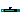

Package with line models for three-phase balanced AC systems
This package contains models for transmission lines and electrical networks.
Extends from Modelica.Icons.Package (Icon for standard packages).
| Name | Description |
|---|---|
|  Line | Model of an electrical line |
| Three phases balanced AC network | |
| Model of an inductance with two electrical ports | |
| Model of a resistive-inductive element with two electrical ports | |
| Model of a RLC element with two electrical ports | |
| Model of a resistance with two electrical ports | |
| Package with example models |
 Buildings.Electrical.AC.ThreePhasesBalanced.Lines.Line
Buildings.Electrical.AC.ThreePhasesBalanced.Lines.Line
Model of an electrical line

This model represents a cable for three-phase balanced AC systems. The model is based on Buildings.Electrical.AC.ThreePhasesBalanced.Lines.TwoPortRLC and provides functionalities to parametrize the values of R, L and C either using commercial cables or using default values.
See model Buildings.Electrical.AC.OnePhase.Lines.Line for more information.
Extends from Buildings.Electrical.AC.OnePhase.Lines.Line (Model of an electrical line).
| Type | Name | Default | Description |
|---|---|---|---|
| Length | l | Length of the line [m] | |
| Power | P_nominal | Nominal power of the line [W] | |
| Model | |||
| Assumptions | |||
| Boolean | use_C | false | Set to true to add a capacitance in the center of the line |
| Load | modelMode | Buildings.Electrical.Types.L... | Select between steady state and dynamic model |
| Thermal | |||
| Boolean | use_T | false | If true, enables the input for the temperature of the cable |
| Temperature | TCable | T_ref | Fixed temperature of the cable [K] |
| Tech. specification | |||
| Auto/Manual mode | |||
| CableMode | mode | Buildings.Electrical.Types.C... | Select if choosing the cable automatically or between a list of commercial options |
| Manual mode | |||
| Generic | commercialCable | Buildings.Electrical.Transmi... | Commercial cables options |
| Type | Name | Description |
|---|---|---|
| input RealInput | T | Temperature of the cable |
Three phases balanced AC network

This model represents a generalized electrical AC three-phase balanced network.
See Buildings.Electrical.Transmission.BaseClasses.PartialNetwork for information about the network model.
See Buildings.Electrical.Transmission.Grids.PartialGrid for more information about the topology of the network, such as the number of nodes, how they are connected, and the length of each connection.
Extends from Buildings.Electrical.Transmission.BaseClasses.PartialNetwork (Partial model that represent an electric network).
Model of an inductance with two electrical ports

Inductance that connects two AC three-phase balanced interfaces. This model can be used to represent a cable in a three-phase balanced AC system.
See model Buildings.Electrical.AC.OnePhase.Lines.TwoPortInductance for more information.
Extends from Buildings.Electrical.AC.OnePhase.Lines.TwoPortInductance (Model of an inductive element with two electrical ports).
| Type | Name | Default | Description |
|---|---|---|---|
| Inductance | L | Inductance [H] | |
| Modelling assumption | |||
| Load | mode | Buildings.Electrical.Types.L... | Type of model (e.g., steady state, dynamic, prescribed power consumption, etc.) |
 Buildings.Electrical.AC.ThreePhasesBalanced.Lines.TwoPortRL
Buildings.Electrical.AC.ThreePhasesBalanced.Lines.TwoPortRL
Model of a resistive-inductive element with two electrical ports

Resistive-inductive impedance that connects two AC three-phase balanced interfaces. This model can be used to represent a cable in a three-phase balanced AC system.
See model Buildings.Electrical.AC.OnePhase.Lines.TwoPortRL for more information.
Extends from Buildings.Electrical.AC.OnePhase.Lines.TwoPortRL (Model of a resistive-inductive element with two electrical ports).
| Type | Name | Default | Description |
|---|---|---|---|
| Boolean | useHeatPort | false | =true, if HeatPort is enabled |
| Temperature | T | T_ref | Fixed device temperature if useHeatPort = false [K] |
| Resistance | R | Resistance at temperature T_ref [Ohm] | |
| Temperature | T_ref | 298.15 | Reference temperature [K] |
| Temperature | M | 507.65 | Temperature constant (R_actual = R*(M + T_heatPort)/(M + T_ref)) [K] |
| Inductance | L | Inductance [H] | |
| Current | i_start[PhaseSystem_p.n] | zeros(PhaseSystem_p.n) | Initial current phasor of the line (positive if entering from terminal p) [A] |
| Modelling assumption | |||
| Load | mode | Buildings.Electrical.Types.L... | Type of model (e.g., steady state, dynamic, prescribed power consumption, etc.) |
| Type | Name | Description |
|---|---|---|
| HeatPort_a | heatPort |
Buildings.Electrical.AC.ThreePhasesBalanced.Lines.TwoPortRLC
Model of a RLC element with two electrical ports
RLC impedance that connects two AC three-phase balanced interfaces. This model can be used to represent a cable in a three-phase balanced AC system.
See model Buildings.Electrical.AC.OnePhase.Lines.TwoPortRLC for more information.
Extends from Buildings.Electrical.AC.OnePhase.Lines.TwoPortRLC (Model of an RLC element with two electrical ports).
| Type | Name | Default | Description |
|---|---|---|---|
| Boolean | useHeatPort | false | =true, if HeatPort is enabled |
| Temperature | T | T_ref | Fixed device temperature if useHeatPort = false [K] |
| Resistance | R | Resistance at temperature T_ref [Ohm] | |
| Temperature | T_ref | 298.15 | Reference temperature [K] |
| Temperature | M | 507.65 | Temperature constant (R_actual = R*(M + T_heatPort)/(M + T_ref)) [K] |
| Capacitance | C | Capacity [F] | |
| Inductance | L | Inductance [H] | |
| Voltage | Vc_start[2] | {V_nominal,0} | Initial voltage phasor of the capacitance located in the middle of the line [V] |
| Nominal conditions | |||
| Voltage | V_nominal | V_nominal(start=110) | Nominal voltage (V_nominal >= 0) [V] |
| Modelling assumption | |||
| Load | mode | Buildings.Electrical.Types.L... | Type of model (e.g., steady state, dynamic, prescribed power consumption, etc.) |
| Type | Name | Description |
|---|---|---|
| HeatPort_a | heatPort |
Model of a resistance with two electrical ports
Resistance that connects two AC three-phase balanced interfaces. This model can be used to represent a cable in a three-phase balanced AC system.
See model Buildings.Electrical.AC.OnePhase.Lines.TwoPortResistance for more information.
Extends from Buildings.Electrical.AC.OnePhase.Lines.TwoPortResistance (Model of a resistance with two electrical ports).
| Type | Name | Default | Description |
|---|---|---|---|
| Boolean | useHeatPort | false | =true, if HeatPort is enabled |
| Temperature | T | T_ref | Fixed device temperature if useHeatPort = false [K] |
| Resistance | R | Resistance at temperature T_ref [Ohm] | |
| Temperature | T_ref | 298.15 | Reference temperature [K] |
| Temperature | M | 507.65 | Temperature constant (R_actual = R*(M + T_heatPort)/(M + T_ref)) [K] |
| Type | Name | Description |
|---|---|---|
| HeatPort_a | heatPort |